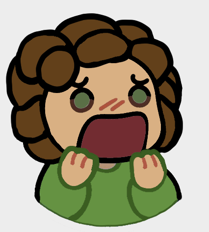
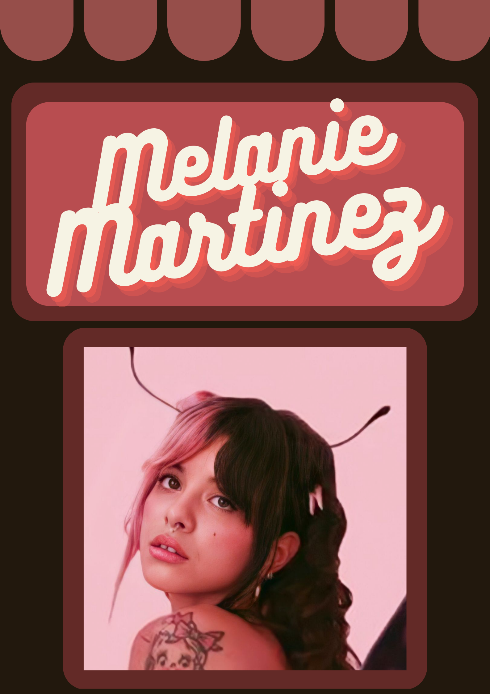

|
Bonjour, je m'appelle Raphaël Leclaire, j'ai 18 ans et je souhaite me réorienter dans le BUT MMI sur le site de Lieussaint. Je souhaite me réorienter car actuellement en 1ère année de BTS SNIR ( Sciences Numérique de l'Informatique et du Réseau ), j'ai pu remarqué que la formation ne me plaisait pas vraiment et qu'elle manquait d'aspect créative de la part des étudiants. Je souhaite donc me réorienter dans le BUT MMI pour améliorer et assouvir ce côté créatif que je possède.
|
Quelques projets
|

|
Dessins
Lors de ses 3 dernières années lorsque j'avais le temps, j'ai pu réaliser des dessins tout comme celui présenté à gauche. J'utilise l'application Clip Studio Paint pour réaliser ce genre de dessins.
|
Création d'affiches
Pendant ses trois dernières années, j'ai aussi eut l'occasion de crée des affiches que se soit pour des travaux tels que des présentations, ou pour des devoirs en anglais principalement. Le travail qui était demandé lorsque je devais faire cette affiche était juste de présenter notre artiste préféré. Pour se faire j'ai utilisé l'application Canvas.
|

|
Stages d'observation en entreprise:
Clinique vétérinaire de Champagne Sur Seine (2018):
Sous la tutelle de Nathalie Berthaut, vétérinaire.
Bibliothèque de l'Université Paris Dauphine (2018):
Sous la tutelle de Christine Marchesi, Gestionnaire des périodiques.
Formation
Juillet 2022- Bac STI2D option SIN (Système d'information et du Numérique)
Septembre 2022- Première année de BTS SNIR (Système Numériques, option Informatique et Réseaux)
Compétences
- Compétences informatiques:
Pix
Pack Office
Processing
Arduino
HTML
- Compétences en langues que je possède:
Anglais (niveau B2)
Espagnol (niveau A2)
Profil Personnel
Ayant fait 2 années de basket, 2 années de gym et 1 année d'athlétisme, le sport m'a permis d'acquérir une facilité
d'adaptation, de travail en équipe tout en étant autonome et rigoureux. Passionné par la musique et l'informatique, j'ai
une bonne capacité d'écoute.